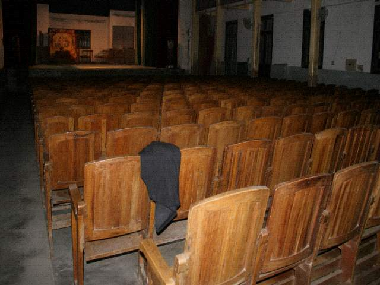

| Tongxian Experimental Troupe | |
| Home| Visit notice| This week's Playbill| Cast & crew| Troupe history| Backstage booking | |
Columns |
 WhitePlay opens in the afternoon. It does not write DutyBook. It does not write out-of-town numbers. It does not write Extra. Refunds are handled as not-yet-CurtainUp until thirty minutes before the start. A NightPlay ticket refiled as WhitePlay requires the troupe head's signature. Signature means that night row is void. Voided, CurtainUp may still be short a person. Being short is the troupe's matter. WhitePlay seating is not East Row 7. East Row 7 is the night show. Do not bring night-show seats to WhitePlay and look for the row. This rider does not govern added incense. Added incense has to be struck separately. Separate strike goes through the NightPlay three books. Refile only, and the added note may still be there. This page is mostly for locals. Out-of-towners who see it, it is because you searched WhitePlay. |
| Tongxian Experimental Troupe · office line does not take refunds | |
WhitePlay rider leftover from the clean proof. The online version is for outsiders. The leftover is for locals. Locals can read the price. Price was never hung online. Sentences that were not hung sit in the footer.
WhitePlay opens in the afternoon. Does not write DutyBook. Does not write out-of-town numbers. Does not write Extra. Refunds handled as not-yet-CurtainUp until thirty minutes before the start. Local ticket twelve yuan. Twelve the window takes in cash. Does not go through the package machine. Machine is NightPlay's. NightPlay ticket refiled as WhitePlay needs the troupe head's signature. Signature means that night row is void. Voided, CurtainUp may still be short a person. Being short is the troupe's matter. WhitePlay seating is not East Row 7. East Row 7 is the night show. Do not bring night-show seats to WhitePlay and look for the row. West rows are for the town. Townspeople know a chair back. They know the one they sat last year. Out-of-towners who see this page, it is because you searched WhitePlay. Searched, you may follow the rider. Rider does not govern added incense. Added incense has to be struck separately. Separate strike goes through the NightPlay three books. Refile only, and the added note may still be there. Still there, still two books. Do not mix the two books. Mix them and QiaoGan will not recognize it. ChengShi will not either. This page is mostly for locals. Locals asked whether a NightPlay package can walk straight into the afternoon show. No. Straight in counts as trespass. Trespass gets no seat. No seat, listen from the lot. Lot you cannot hear the gong. Cannot hear, go home. Going home is correct. Correct things do not need to be written into the notice. Notice is already long enough. Long enough and it still does not explain NightPlay. NightPlay has another page. Do not bring that page to override this one. Twelve-yuan change comes from a tin box. Box sometimes has no coins. No coins, wait for the next local ticket. Next one comes, then change. Cannot make change, do not use the package machine. Package machine is NightPlay's. NightPlay numbers go on the list. WhitePlay does not enter.